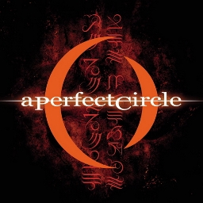
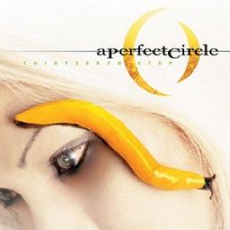

El álbum debut de la banda, Mer de Noms ("Mar de nombres" en francés), se lanzó al mercado el 23 de mayo de 2000. Es el álbum debut de una banda de rock que más alto ha debutado en listas, vendiendo más de 188.000 copias en su primera semana, y arrancando en el puesto número cuatro de la lista Billboard 200. Mer de Noms fue certificado platino por la RIAA el 31 de octubre de 2000, mientras la banda seguía de gira.
| Mer de Noms | |
| Nombre de la cancion | Liricas |
| The Hollow | Liricas |
| Magdalena | Liricas |
| Rose | Liricas |
| Judith | Liricas |
| Orestes | Liricas |
| 3 Libras | Liricas |
| Sleeping Beauty | Liricas |
| Thomas | Liricas |
| Renholder | Liricas |
| Thinking of you | Liricas |
| Breña | Liricas |
| Over | Liricas |
El segundo álbum de la banda, Thirteenth Step, salió a la venta el 16 de septiembre de 2003. Con la llegada del disco llegó un sonido nuevo. Mientras que Mer de Noms tiene un sonido más duro y profundo, Thirteenth Step es más melódico y directo. Este nuevo sonido es audible en los tres sencillo extraídos del álbum: "Weak and Powerless", "The Outsider" y "Blue".
| Thirteenth step | |
| Nombre de la cancion | Liricas |
| The Package | Liricas |
| Weak and Powerless | Liricas |
| The Noose | Liricas |
| Blue | Liricas |
| Vanishing | Liricas |
| A Stranger | Liricas |
| The Outsider | Liricas |
| Crimes | Liricas |
| The Nurse Who Loved Me | Liricas |
| Pet | Liricas |
| Lullaby | Liricas |
| Gravity | Liricas |
El 2 de noviembre de 2004 (día de elecciones presidenciales en Estados Unidos) lanzaron al mercado un tercer álbum, EMOTIVe, que contiene versiones de canciones antibélicas de artistas como John Lennon ("Imagine") o Joni Mitchell ("Fiddle and the Drum"). Emotive se grabó con los miembros actuales y con antiguos miembros de la banda, aunque es principalmente obra de Keenan y Howerdel.

| eMOTIVe | |
| Nombre de la cancion | Liricas |
| Annihilation | Liricas |
| Imagine | Liricas |
| Peace Love and Understanding | Liricas |
| What's Going On | Liricas |
| Passive | Liricas |
| Gimmie Gimmie Gimmie | Liricas |
| People Are People | Liricas |
| Freedom of Choice | Liricas |
| Let's Have a War | Liricas |
| Counting Bodies Like Sheep to the Rhythm of the War Drums | Liricas |
| When the Levee Breaks | Liricas |
| Fiddle and the Drum | Liricas |